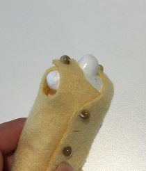
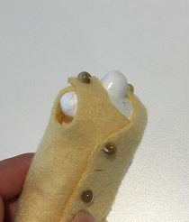

作り方は、レシピ一覧を参照してください。
まずは基礎の基礎から。巾着袋は直線縫いだけで作るからきっと簡単に作れる‼
工程
型紙を作る。それを布に写す。切る。
横を縫う
上を縫う
空きの処理をする
マチをつくる
紐を通す
失敗
私は勘違いをしていた。
横を縫い、空きの処理をしてから、上を縫わないと空きの処理ができないのだ。間違いをしていた…。もちろんほどき直して縫う。ショック…。工程間違えると縫えなくなるから、気をつけないといけない。
意見
★どんな方法で、何ができるのかよくわからないまま作業しなければならなくなる。★
解決：一番に工程を書く。
★見づらい★
解決：写真をもっと増やす。(写真を増やすためにもう一度作成します。)動画とか撮れたらいいなぁ。

布を切った。レーザーカッターのパワーは10で、スピードは1です。このくらいだと焦げないで切れるみたい。
布に彫刻をして、出来上がり線を描きたいと思ったけど、上手くいかない。原因として考えられるのは、布が薄いことと、

文章と写真だけで説明していくの難しいな…。巾着袋の反省を生かしてたくさん写真撮ったけど、どの部分を説明するとわかりやすいってのがよくわからない…。
刺しゅうのデザインは各自で考えてほしいからあまり図案をのせたくないな…。一つデザインがあるとそれに人は引っ張られやすくなるから創造の時間を邪魔しかねない…。しかし、じぶんで創造する事が難しい人もいるわけだからそれも考慮した方がいいのも確か。葛藤だな。
トルソーに布を巻いて服を作る

かみんぐすーん
製作中。頭の型紙どうしよ…
6月の4週目まで…布のテスト
6月の5週目まで…型紙・データの作成
6月25日…布を買いに行く。ユザワヤで見かけた気がする。(結果的に大塚屋という布の通販で購入。7月2日に届く。)
7月の3週目まで…本番の布を切る
7月の4週目まで…編む
※テスト期間は予備日
実際に展示会場であるギャラリーＴに行き、真っ白な壁に赤・毒というイメージが思い浮かんだ。
そして、小学生の頃衣装で着た赤いオーガンジーの布を思いついたのだ。
まずはテストから。

右から順にレーザーカッターのパワーの出力を5、8、10、12、14、16、15とした。スピードは2。
5や8は論外。ちゃんと切れてない。10も… 。12~16はそこそこちゃんと切れているから、このくらいの数値だろう。16だと少々溶けすぎてしまっているから、15がベストだろうか。
とういうことで、パワーは15に決定。スピードはひとまず2で奇麗に切れているのでそのまま。
その他に素材も試してみた。
オーガンジーよりもストレッチ性のある布。この素材は伸びやすく薄いため、布がたわまないようにまっすぐにするのが難しい…。右から順にパワーを3、5、8、10、6、7、5(これはスピードが1になっている)
6か7あたりがよい感じだが、布をまっすぐにしきれなくて、かなり切れ味にむらがある。

薄めのニット。これもストレッチ性のある布だ。体操服とかで使われているような布といったらわかるだろう。パワーは右から40、35、30、20、15だ。レーザーカットするというよりは、溶かすという表現の方が正しい。
ポイントとして、レーザーカットする布はは化学繊維であると、ほつれにくい。(無理やり切れ残りを引っ張ったらそこからほつれるが)天然繊維の方が好きだが、レーザーカッターの強みを生かすなら切り口がほつれないことだろうと考え、化学繊維を採用することにした。化学繊維は溶けるから、分厚い布でもパワーは弱めがよい。
テーマは海の中の魚・和。そして、私のイメージに浮かんできた赤・毒。それらが融合して完成形にになるのに苦労した。近すぎるワードは簡単に答えを出せすぎて新しいものを探しづらいこと、もともと服を製作する順序を知っているからそれを崩せないことが原因にある。
最初はお着物の羽織にレースみたいにレーザーカットしようと考えていた。何と面白味のない。先生からキルトみたいなというアドバイスをいただき、縫わないで服作ったら面白いなと思い、早速考えを巡らせた。
鱗をテーマに服を作る。

出力したらどんなもんかわからなかっため、とりあえず出力。鱗にいろいろな海の生き物が描かれたら面白いなと思い、有孔虫のイメージを入れてみた。布が重なる部分が美しい。あと、向こう側が透けるから、鱗の見える部分だけじゃなくて、見えないところもあった方がいいなと思った。
そして、それぞれの鱗パーツをつなぐ方法はこんな感じです。これなら上下にも左右にもつながる。紐を通すだけなため、縫わないし、つなぎ方を変えればよいから服にも仕立てることができる。

鱗の完成形。有孔虫どっか行ったし、独要素はもはや色だけだけど、これをたくさん繋いだらきっと美しいだろうな…。鱗について調べてたら、鱗も成長と共に、年輪のような線がつくみたいだ。イメージを鱗だけに集中して写真の切り方だと、データのミスで二回切ってしまったことと、ちいさい四角だからもう少しスピードを落とせばいいとアドバイスをいただきました。
袖どうしよ。


一回で切れる量が最大で13枚。(ミスがある場合はそれより少なくなる。)時間は18分と42秒。長い…。
板に縫を貼って切ってます。少しでも布のたわみが出ないように。板に張る作業が実は時間かかってるから全体で22~3分かかる計算になる。どのくらい切るべきかは、とりあえず組み立ててから考える。予想だけど、布の重なり部分があるから、切った布の長さよりは短くなるはず。後は色のバランス。

とにかく編んでいく。毛糸の後始末用の太めの針にリボンを通してやると効率がいいことが分かった。

いい感じです。素敵。しかし、触ると弱いところからどんどん壊れていってしまうから実用性は皆無。
江の島の展示では様々な人に奇麗な作品だねって言ってもらえて嬉しかった。正直作るの大変だったから心折れかけてたけど人に喜んでもらえるとこちらも嬉しい。ワークショップをぜひ開催してほしいという話も持ち上がった。子供に小物を作るキットとしても使えるとの声もいただいた。作品に触る人もいたので、ほんとは触ったり着たり出来たらもっと楽しんでもらえたんじゃないかなと思う。
この間鱗取りしたけど、マグロはたぶん円鱗。体の位置によって鱗の形は違う。丸いのは白い皮膚のところに多く、黒い皮膚のところは大きい長細い鱗だったな…。ギザギザしてた。人間の体毛と同じ…？
作りながらどんどん壊れていくという賽の河原状態の作業が続いた。布の丈夫さと、何回もリボンを通さなくてもよい設計と、リボンを通さなくてもよい編み方とを考えていかないといけないな。
手縫いで服を作ることは可能だ。実際、多くのレシピが存在するし、家庭用ミシンでできることは手縫いでできると言っても過言ではない。
しかし、手縫いで作るためには目をそろえて縫う技術がいる(目がそろわないと丈夫にできないし、仕上がりも悪い)。なにより、時間がかかりすぎる。昔の人はすごいなとしか言いようがない。
一枚の布を一周ぐるっと回るように作る服。これならボタンをつけるだけで服が立体になる。ボタンホールの部分だけは、実際サイズで作ると組立られるボタンがないため、5㎜で設定されている。ボタンの代わりにビーズを用いた。
これは実際サイズの10分の1サイズで作られている。マネキンに紙を巻き付けて型紙を作成してそこからデータを作成した。しかし、実際に出してみると、腕の周りが窮屈で、首回りも布が余っていたりとかなりよくない。無理に着せてる感満載。修正と調節が必要。
型紙を修正してみた。布でやると高いので、とりあえず、コピー用紙を切り出した。

②では、肩の部分を前を長く、後ろを短く修正。それと前の襟ぐりを上にあげた。初めて切り出したときよりは襟ぐり、肩回りがすっきりする。しかし、後ろの襟ぐりがきつそうなのと、肩が身体に沿わない。
③では、肩を斜めに3ｍｍ切って、体に添わせるようにした。また、後ろの襟ぐりを若干下げた。②より身体に添うようになった。しかし、紙だと布より柔軟性がないため、完全に体に沿っているかどうかを見ることができない。③の型紙を今度は布で切ってみる必要がある。
 


という訳で、フェルトで切ってみた。試作1号より布が厚いため若干見え方は違う。肩の部分のフィット感も悪くない感じ。実際サイズで作るなら、少しだけそれぞれ穴の部分を大きくしてもいいかなって感じだ。あとはこのボタンで留めるだけワンピースをどう生かしていくかだ。

髪の毛の編み方の一つである、編み込みを使って布同士を結び付けられないかと考えた。試作としてはまずまずの出来ではないだろうか。
フリンジになっている部分は30㎜の長さで5㎜の太さがある。30㎜だと編み込みに参加させる回数が1回しかなかったため、この試作は丈夫ではない。せめて3回くらい編むことができればもう少し丈夫かもしれない。編み込むためにはそこそこの長さがいることが分かった。あと、編み込むのが大変だった。どの紐を次に編むのかを目印をつけておかないとわからなくなる。もっと簡単な方法があればいいなと思った。
フリンジの長さを80㎜、太さを3㎜にした。編むととても丈夫にできることがわかるが、私が編むとどうしても片方に力が寄ってしまって、まっすぐ編むことができない。また、編み込むフリンジの本数が太くなるとその分編み込んでいるところが太くなるため、着にくそうだなって思った。案としてはいいけど、没かな…。

台形の底辺を少しずつ長くしていったら、直線以外の形もできるのではないかという実験。結果はうまくいった。予想通り。これ、このまま大きくしてスカート作っても可愛いな。重なりの部分が多くてちょっと甲冑感あるけど。スカートだから簡単だけど、例えば体のラインに沿うシャツみたいなのを作るときはもっと難しそう。
簡単に想像できる方法は、二つ折りにする、もしくは線を繋げて切ることだ。
こちらは二つ折りにして切る方法。なるべく布と布が浮かないようにするためアイロンがけを徹底した。切るときに難しかったのは、表が切れても裏側が切れないことだ。出力を一枚の時より強くする必要がある。しかし強いと、布の内側になった部分が焦げてしまう。しかし、ぴったり合同に切れから、薄い布には効果的だろう。
こちらは直線を繋げるように切ったもの。若干ずれる。1ミリ程度なら縫うときにカバーできるので支障なしとみていい。これなら分厚い布も確実に切ることができる。問題は繋げるときのずれをどう解消するかだ。
 板に張った時
板に張った時
ファーの素材は大変、はさみでは切りにくい。レーザーカットなら、切り口から毛がボロボロしなくていいだろうと思い、やってみた。
せっかくならつけ襟にしようと思い、裏布も切った。ファーは布だけがきれいに切れる。切り方のポイントとして、
ファーじゃない方を上に向けてセットすること
焦点を当てる位置を、布の表面にすること(深く沈めすぎないこと)
がポイントとなる。
切り出したら、最初に肩の部分をそれぞれくっつける。そして、裏と表を合体させる。襟が来る部分は残しておく。そして襟をつける。ファーの布が伸びてしまって、同じサイズで切ったはずなのにうまくいかない…。伸びる生地は難しい。

ボタンはレーザーで切ってみた。しかし、裏表が二枚になっていると、ボダン止めしにくい。さらに裏布がほつれてきたので、ボタンホールは手縫いで作ることにした。
もふもふでかわいい。
民族衣装について書かれた本にタイのポンチョが載っていた。それを参考にトップスを作ってみた。袖に麻の模様を入れる。
切るときは、一度に二枚できる。上半分と下半分という感じで切った。どうしても上下でずれてしまったけど、わきの部分は縫うので、問題なしです。

襟もとにも柄を入れたいね。直線縫いだけで作れるので、こういうのをワークショップでやったら面白いな。
洋服のデザイン等の専門学校の中にある購買部。母から布が安い(学生向けの価格で一般でも購入可能)と聞いたので行ってみた。学校の中にあるため入るのに緊張した。
布のジャンルはドレスやジャケットなど割とフォーマルな恰好向けな感じだった。スーツの布、ウエディングドレスの布とか売ってた。価格は大体で見たが、私が欲しい布は家の近くの生地屋と変わらず…。私が欲しいのは、レーザーカッターでの加工に向く丈夫で安くて化学繊維の無地でカラーが豊富ってところだからちょっとコンセプトが違ったかな…。
杉野学園の展示物やコンテストの結果の写真とか、すごく派手でかっこよかった。これがステージ映え。デザインの専門学校の文化祭とか行くともっと勉強できるかもな。(展示してあった作品はガラス越しに少し見えた程度。フリルの使い方、色の合わせ方、生地の使い方の発想が一般に売っているアパレルのそれとは違う。)

ジーンズに彫刻してオリジナルの模様を入れてみた。そしてそれを袴スカートに仕上げてみた。結構加工範囲広いのと、スカートにするならもっと中心寄りに模様を入れた方がいい。
色のトーンを落としてみたかったので、紅茶染めをしてみた。紅茶を煮出して、その染液で布を煮詰めれば色がつくはず。
すっかり取り忘れて、火を止めて一晩おいてしまった。色は肌になじみやすい色になる。